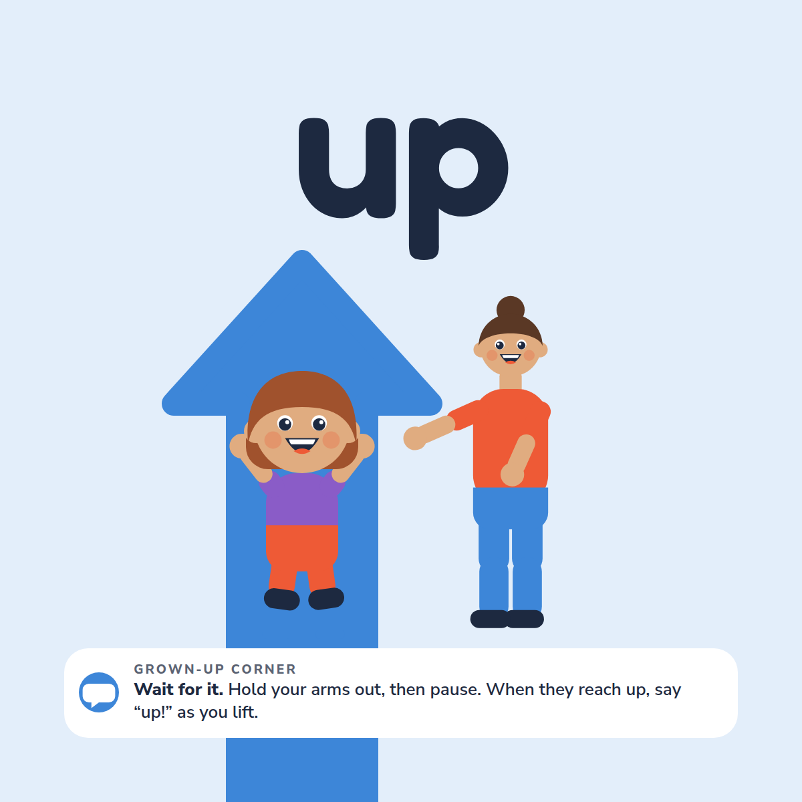
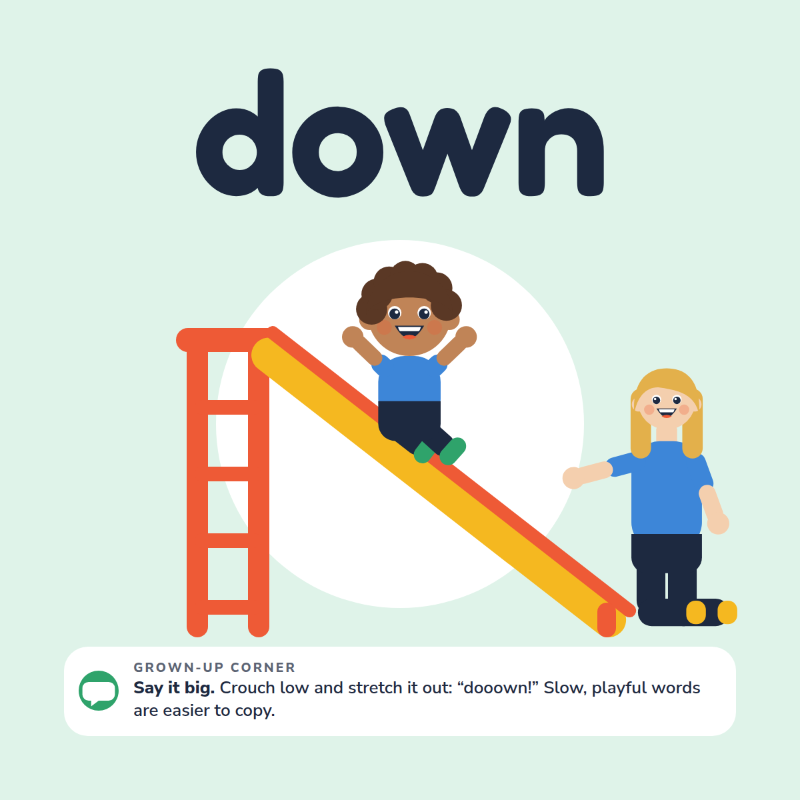
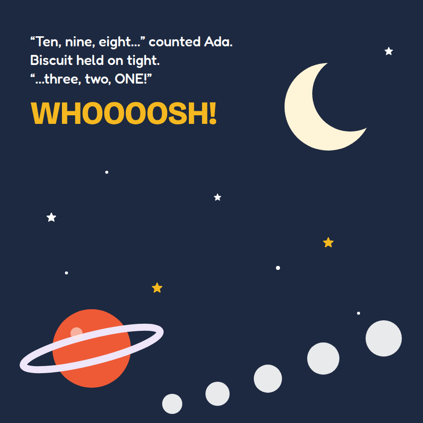
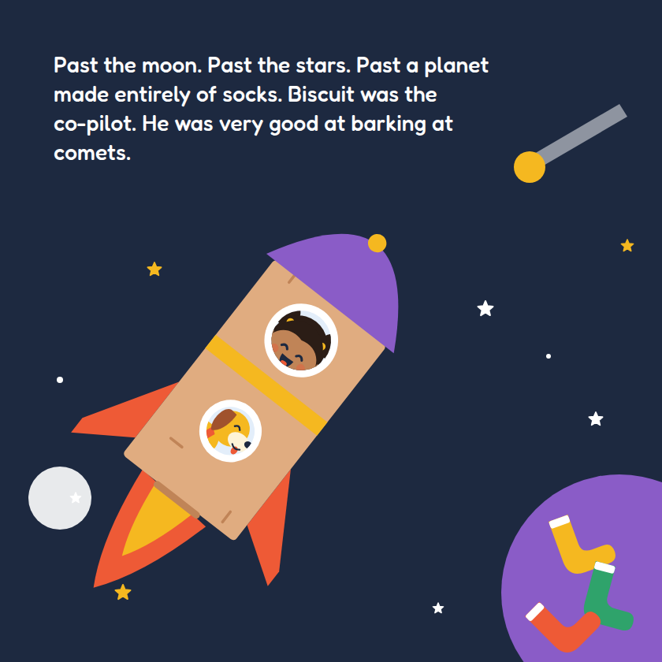

Talk-along books & printables · Ages 0–12
Talk, touch and play, bound between two covers.
Board books, picture books and printables with a small grown-up tip on every page, so reading together turns into a back-and-forth.


Page 4 · Grown-up cornerWait for it. Hold your arms out, then pause. When they reach up, say “up!” as you lift.
Page 5 · Grown-up cornerSay it big. Crouch low and stretch it out: “dooown!” Slow, playful words are easier to copy.
Shop by age
0 → 12 yearsStart with the child you’re shopping for.
Everything we make is written for one or more bands on this scale. Tap a band to see what fits; a book that spans two bands shows up in both.
New · Board book · Ages 0–3
Up! Go! More!
Fourteen first words to say, sign and play together.
Each page shows one word a toddler actually uses, set big beside one bright picture of a child and a grown-up acting it out. Underneath, a Grown-up corner gives you one small thing to try.
hiupdowngostopballuh-ohmoreall doneshoebye-byebookhugnight-night
6 × 6 inThick boardRounded cornersAlso in paperback


From the picture book · Pages 18–19
The Day the Tablet Slept
On Saturday the family tablet takes a nap, nightcap and all, so Ada and Biscuit fill the day themselves: a block tower, every puddle on the street, and a cardboard rocket past a planet made entirely of socks. 32 pages, ages 3–7.
Paperback $11.99 · Hardcover $17.99
See the bookOn the shelf
Everything in the shopOn the shelf

Inside every book
Six small moves that turn a page into a conversation.
You don’t need a script, a method or a quiet house. Every page of our books carries one of these, written in plain words.
- Pause and wait
- Count to five in your head. The quiet is your child’s turn, and a look or a sound counts.
- Say what you see
- Name what they’re looking at, not what you hoped they’d look at.
- Add one word
- They say “ball”. You say “big ball”. One step ahead, never three.
- Offer a choice
- “More, or all done?” Now there’s a reason to answer, and pointing is an answer.
- Follow their lead
- Skip ahead, go back, stay on the shoe page. It’s their book too.
- Sing and gesture
- A tune or a hand sign gives a child two more ways to join in.
These are everyday ideas for parents and carers, not therapy or medical advice. If you have questions about your child’s development, your child’s doctor is the right person to ask.
For teachers, PTAs & parent groups
Bring it to your classroom or your next parent evening.
The classroom pack is licensed per teacher or per school site; the license arrives by email as a stamped PDF the moment you pay. Evening kits come with slides, a word-for-word script and handouts, so any member of your group can present.
School site $39 Host-It-Yourself Evening KitEarly years (0–5) or school years (5–12) edition$49 a year Books for a whole groupTen or more copies, shipped straight from the printerFrom 20% off
We don’t run live sessions. Every kit is presented by your own people.
Research hub · Free to read
Every source cited in fullColophon
Founded by a parent and educator.
Play Before Pixels makes things you can hold, print and read at your own pace. No accounts to make, no app to download, no one to book a call with.
made for laps
- Books
- Printed to order by our printing partners and shipped worldwide. Nothing sits in a warehouse waiting for you.
- Printables
- US Letter and A4, delivered by email in minutes. Print as many copies as your household needs.
- For groups
- Kits your own members present, with site licenses sent automatically as stamped PDFs.
- Research
- Only peer-reviewed studies and official guidelines, each cited in full.
- Set in
- Bricolage Grotesque, Nunito Sans and, for the child’s words, Fredoka.